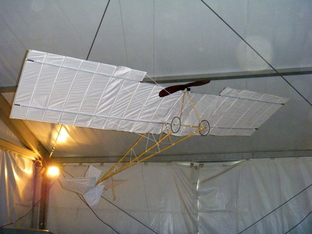

Cervolix 2011

Cervolix, sur le plateau de Gergovie qui domine Clermont-Ferrand, un très beau site ! Je prends les nationales de Beauce, traverse la Loire à Jargeau, mais je rejoins l'autoroute à Lamotte-Beuvron, sinon c'est trop long... A 40 km, on voit la chaîne des Puys, malgré une météo grise et pluviotante...

A 20 km, le plateau de Gergovie barre l'horizon...

Vendredi soir, pot dînatoire traditionnel offert en grande partie par les Schaeffer pour l'anniversaire de Jean-Pierre ! Marie-Hélène a préparé plein de bonnes choses sucrées et salées, aidée par ces dames. J'amène quelques bricoles, mais mon porto a peu d'amateurs, je le remmènerai presqu'intact ! Pourtant, ça réchauffe, car il fait froid, venteux et il pleut malgré le store de Jean-Pierre et une bâche tendue entre les camping-cars...


Samedi matin, je vais revoir ma Demoiselle de Santos-Dumont que j'ai pendue hier soir au plafond du barnum des avions historiques... A côté du Blériot, elle a l'air bien légère et Santos était génial mais la souplesse a dû lui poser des problèmes...

Une reconstitution de Blériot XI grandeur nature occupe la majeure place... Construit par un club, il respecte le modèle sauf en ce qui concerne le moteur qui est pour l'instant moderne...

Une belle hélice a été aussi installée... sur le moteur moderne. Mais le projet du club est d'acheter une reconstitution qui marchera de moteur Anzani 3 cylindres comme le vrai (Anzani était un pilote de moto de course, qui a construit pour cela des moteurs légers). Ce moteur est refabriqué en Hongrie. Le club vend des livres, BDs, cartes postales, casquettes, badges pour financer tout ça !

Pour piloter, Blériot a inventé le manche à balai qui permettait de piloter d'une main... Quatre câbles sont attachés à la "cloche" et actionnent la profondeur et le "gauchissement" au sens propre : l'aile n'a pas d'ailerons, les câbles, attachés au bord de fuite, la vrillent, la "gauchissent" pour faire virer !

La "cabine de pilotage", vue de l'avant ! Le moteur d'origine consommant et crachant beaucoup d'huile, le pilote arrivait maquillé en noir !
Un des problèmes pour autoriser le vol de la copie, c'est qu'il faut désigner un constructeur (responsable...) et qu'il n'y a pas de volontaires !

Sous l'aile du Blériot, une maquette de Sopwith Pup, avion de chasse, est installée par son auteur. Fabriqué en 1916, pour 1770 exemplaires au total, il volait à 180 km/h ! La maquette possède un moteur et est télécommandée...

La manifestation est centrée sur le raid Paris - Puy de Dôme, un Grand Prix doté par Michelin de 100 000 francs-or soit environ 300 000 €, c'est motivant ! On reprochait à Michelin de ne pas risquer beaucoup, un tel exploit n'étant pas possible avant 20 ou 30 ans... En fait, 3 ans plus tard, après les tentatives infructueuses d'autres héros, Fernand Renaux avec un passager, relevait le défi, à bord d'un Farman...

Après quelques étapes, Renaux posait son appareil au sommet du Puy-de-Dôme... sans casse, ce qui était méritoire ! Il faut dire que la vitesse de vol n'était pas énorme et il avait fallu 5 h 10, escales de ravitaillement comprises...

Les journaux faisaient leur Une de la réussite.

Voilà la maquette du Farman de l'exploit... Avec une envergure de 11 m, et très long, l'avion devait être très stable mais peu maniable...

Sous l'aile du grand, un petit Blériot, dont le modèle appartenait à une escadrille italienne ! Celui-ci est, comme le Sopwith, motorisé et télécommandé...

Tiens une autre Demoiselle, beaucoup plus solide et massive que la mienne ! Il faut dire qu'elle porte un pilote et surtout un moteur et une télécommande... Elle a même des ailerons festonnés à la mode de l'époque, la vraie n'en avait pas...

Et le moteur est costaud, sans doute plus performant que le vrai à l'époque !

Devant le barnum, l'Armée de l'Air présente une cabine de Jaguar A où les spectateurs peuvent s'asseoir... La perche de ravitaillement en vol est sortie, impressionnante...

Ils présentent aussi un Corsair de belle finition et de belle taille : 2,60 m et un moteur de... 1,75 CV !

Un petit tour dans les stands en remontant, classique : Ludo et Dom, puis des marchands de jumelles, de maquettes, de polaires, d'ascenseurs.... Et cet institut qui a rendu une voiture étanche pour montrer ses possibilités et la pureté de l'eau de l'usine après traitement !

Un premier avion se présente, pas un avion de voltige mais un appareil allemand à tout faire, un Fieseler-Storch (Cigogne) avec son train à course très longue qui, avec sa vitesse réduite, lui permet d'utiliser tous les terrains !

Bon, je vous montre quand même quelques cerfs-volants ou assimilés. Les Awita sont là, comme Jos et bien d'autres...

Je commence à faire voler ma grue, mais, bizarre, je me retrouve tout seul en l'air alors que le public descend vers la route qui borde le plateau... Un Quad vient me rappeler à l'ordre : il faut tout affaler pour que la PAF puisse faire sa présentation...

La présentation a été très belle et variée, un peu diminuée par le manque de plafond qui ne permettait pas les figures verticales... Nombreux passages en formation serrée avec fumées tricolores, bien sûr...

Ils reviennent dans une formation différente, très large. Les passages d'une formation à l'autre sont très rapides et passent sans doute inaperçus de la majorité des spectateurs...

Encore une formation, qui a l'air assez lâche : c'est exprès, devant nous ils partent tous en tonneaux en restant en formation !

Une autre formation, en losange, sans doute plus difficile à tenir, le charognard, en queue, doit s'aligner sur les 2 côtés...

Encore une figure, ce n'est pas la même que plus haut, les avions centraux sont reculés d'une case...

Pour celle-ci, l'avion du milieu n'a pas beaucoup de droit à l'erreur !

Et voilà les éclatements : 4 avions partent d'abord, puis les 4 autres... Evidemment, pour une belle photo, il faudrait être plus loin !

Si on attend que les 4 du bas éclatent aussi, voilà le résultat, splendide en un sens...

Les appareils sont maintenant séparés. Pour ces deux-ci, le rouge passe tout droit, le blanc fait des tonneaux autour de sa traînée...

Et ça tourne rond, toute la longueur du passage...

Un autre éclatement à 6 : 4 cabrent, les 2 autres font des tonneaux barriqués...

Une autre figure, à deux : de face, les avions font des entrelacs en se croisant plusieurs fois en ciseaux...

Et le croisement central attendu... Voici l'appareil bleu, sur le dos sinon c'est trop facile...

Et le rouge croise... Zut, j'ai encore raté, mais ça va si vite que mon Canon n'a pas le temps de réarmer... Photographier des voltiges, c'est un métier !

Plus facile à photographier, en formation assez serrée, tous les avions font des tonneaux en gardant leur place !

C'est fini pour aujourd'hui (et aussi pour demain, il fera trop mauvais)... On remonte les cerfs-volants. Je retrouve Pierre Gérard le délégué CVCF et seul membre de sa Région... Nous nous sommes reconnus au déjeuner grâce bien sûr au cordon CVCF que nous portons, même si nos habits de froidure les masquent un peu ici...

A côté de nous, Patrice et Michelle Peigné font voler leurs cerfs-volants épurés, mais pas si fragiles qu'ils en ont l'air, malgré un solide vent...

Encore une oeuvre de Patrice...

Je ferai un bon vol avec ma grue, malgré la force du vent et les turbulences. Mes grues résistent bien et ne se cassent pas, même en cas de chute...

Mais j'arrêterai vers 16 h, il fait trop froid dans ce vent glacial, humide et rapide... Au soir, descente générale vers le gymnase de Roche Blanche où a lieu le dîner... Plus de 200 personnes, dont tous les membres de la PAF, avec les mécaniciens et l'équipage du Transall qui véhicule du matériel au cas où... Il y a aussi tous les pilotes des avions de présentation, en particulier monsieur Krin...

Les cuisiniers sont prêts avec leur batterie de réchauds et de poêles d'une dimension extraordinaire.... Au menu, buffet de charcuterie, magret de canard aux pommes sautées, fromage, tarte aux pommes, et Vin des Volcans, local et plutôt bon !

Le cuistot découpe les magrets à une vitesse impressionnante, protégé par son gant en cotte de mailles...

Les Awitas sont plongés dans la notice de l'hélico qu'ils ont acheté, et pas encore complètement cassé, bravo !

Outre le vin, de l'eau de production locale à volonté... Mais avec l'étiquette en japonais ! Il paraît : Un, que le Japon en importe beaucoup. Deux, que l'eau offerte gratuitement est en japonais pour éviter qu'on ne la revende !

Hervé Villaspasa fera un speech, surtout pour remercier un à un ou par genre tous les participants...

Remontée sur le plateau, le panorama sur Clermont est beau aussi la nuit, c'est là que je campe !

Dimanche matin, pas très beau, je paresse un peu. Il fait tellement humide que des lambeaux de nuages s'accrochent dans les vallées... Mais il fait plus chaud qu'hier et le vent est moins fort et baissera encore...

L'après-midi est très pluvieux au début, tout le monde plie ses gaules vers 15 h d'autant que le vent tombe, mais ça s'améliorera et je revolerai une heure et demie pratiquement tout seul, à peine mouillé, avec les enfants équipés des cerfs-volants de Dom...

Je pars sur l'autoroute, pas de tourisme au départ, la météo n'y encourage pas... Il faut mettre les phares et rouler prudemment...

Vers 19h30, je quitte l'autoroute à Salbris et trouve un coin tranquille à Brinon-sur-Sauldre (ne pas confondre avec Brinon-sur-Beuvron). Il fait bien plus beau qu'au sud, et 15 degrés à 20h ! Un parking calme (je recommande, avec des toilettes...) derrière une belle église, très éclairée...

L'église est en moellons, mais le chevet est en un appareil de briques en losange très pittoresque...

Le porche en colombages donne sur une galerie protégée, à charpente de bois, qui couvre tout le devant !

La galerie tourne même et occupe tout le côté... La poutre à gauche sert sans doute de banc aux messieurs pendant que les dames vont se sanctifier. Elle est polie par le frottement des fonds de pantalon !

L'horloge est curieusement installée : au lieu d'être dans le clocher, ce qui permet d'actionner les cloches facilement, elle a sa petite maison à elle sur le côté sud, vers le "centre ville"...
Au matin, je reprendrai les routes départementales : Jargeau, Angerville, Rambouillet à travers le sud de la Beauce, c'est joli, je ne vais pas reprendre l'autoroute !
Cervolix 2011 : Un site inoubliable, plus de problèmes de queue à la restauration, du vent, de la pluie aussi malheureusement, un bon accueil et des animations très variées avec entre autres les avions anciens et la PAF, vraiment une rencontre qui sort des normes !